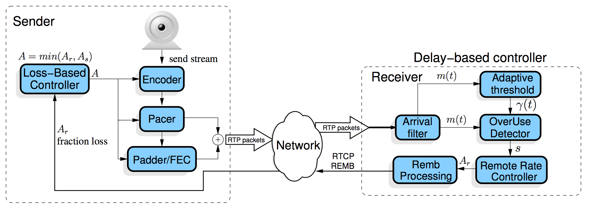
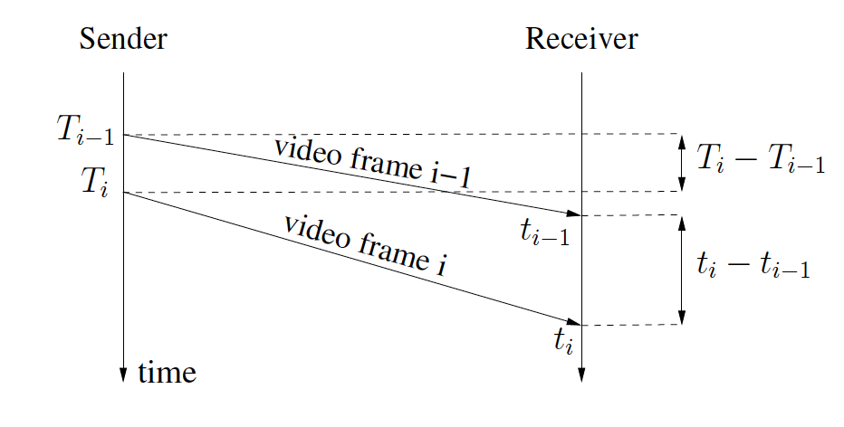
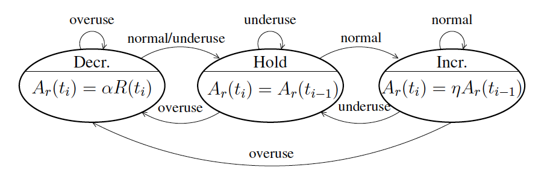
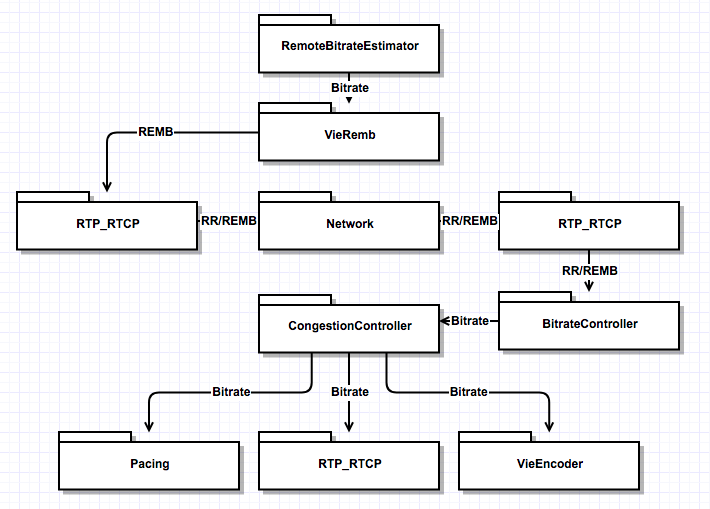
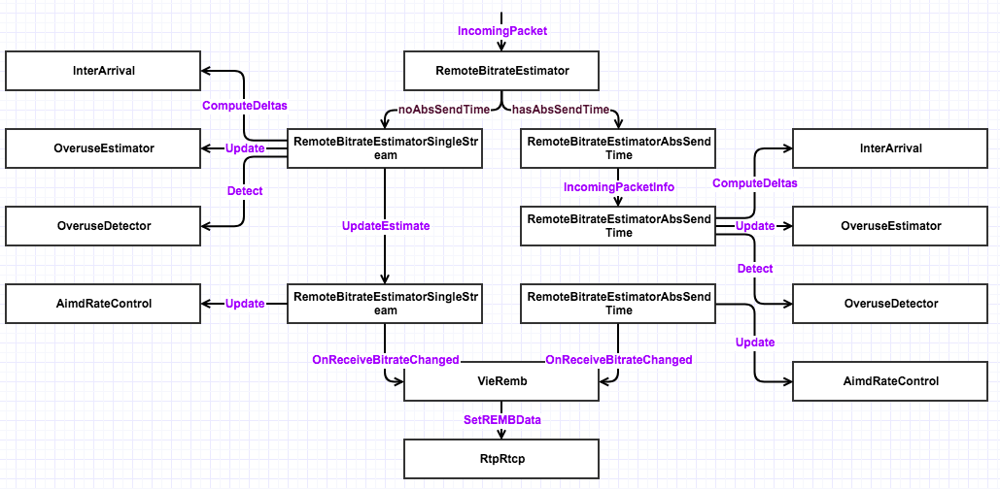

WebRTC拥塞控制策略
你只是看起来很努力。
影响视频会议质量的因素主要在于视频图像质量和传输时延。视频图像质量对于视频会议的影响不在此赘述。视频会议等实时流媒体应用对于实时性的要求很高，实时性要求我们必须要有较低的时延（时延敏感）。影响时延的因素包含：
- 媒体数据在收发端的处理速度
- 网络拥塞
网络拥塞是本文的研究重点，TCP协议拥有完善的拥塞控制机制，UDP则没有在拥塞控制方面有所规定。由于目前大多实时流媒体应用都是基于UDP传输，所以高效的拥塞控制算法是保证实时流媒体应用QoS的重要手段。
基于丢包的TCP协议无法满足实时流媒体应用的低时延需求。
WebRTC里针对拥塞控制，采用了谷歌拥塞控制算法（Google Congestion Control，GCC），该算法包含两部分：发送端基于丢包的码率控制和接收端基于延迟的码率控制。这两种部分都是通过调节数据发送端码率来达到拥塞控制的目的。GCC算法架构如下：

发送端基于丢包的码率控制
发送端的码率控制是根据丢包率来计算预期的发送码率，丢包率的信息包含在接收到的RTCP报告报文中。计算公式如下，其中 ${f}{l}({t}{k})$ 表示 ${t}{k}$ 时刻的丢包率，${A}{s}({t}{k})$ 表示 ${t}{k}$ 时刻发送端的码率：

接收端基于延迟的码率控制
发送端的码率控制是根据延迟来计算预期的发送码率，计算出来的码率信息会通过RTCP REMB报文反馈给发送端。计算公式如下，其中${t}{i}$表示第$i$个视频帧被接收的时间，η=1.05，α=0.85，${R}{r}({t}_{i})$ 表示接收端在最近500ms中测量的接收码率：

如GCC算法结构图所示，基于延迟的码率控制包含五个模块：Arrival-time Filter、Overuse Detector、Remote Rate Controller、Adaptive Threshold、Remb Processing。GCC论文中给出了这五个模块的关系：
The remote rate controller is a finite state machine in which the state of $σ$ is changed by the signal $s$ produced by the over-use detector based on the output $m({t}{i})$ of the arrival-time filter. The adaptive threshold block dynamically sets the threshold $γ({t}{i})$ used by the over-use detector. The REMB Processing decides when to send a REMB message based on the value of the rate ${A}{r}$. Finally, it is important to notice that ${A}{r}({t}{i})$ is upper bounded by 1.5${R}{r}({t}_{i})$.
Arrival-time Filter
Arrival-time Filter模块用来计算网络延迟$m({t}{i})$，GCC算法采用Kalman Filter来估算该值。Kalman Filter采用单程帧间延迟差值${d}{m}({t}_{i})$，单程帧间延迟差值表示两个数据帧到达接收端的延迟差值。如下图所示：

根据该图，我们可以得出 ${d}{m}({t}{i})$ 的计算公式如下：
Overuse Detector
Overuse Detector根据Arrival-time Filter计算出的网络延时$m({t}{i})$以及Adaptive Threshold提供的$γ({t}{i})$值来判断当前网络是否过载，并告知Remote Rate Controller对应的信号$s$——overuse、normal、underuse。下图表明Overuse Detector是如何工作的：

产生overuse、normal、underuse三种信号的条件如下：
- overuse: $m({t}{i})$ > $γ({t}{i})$and keep 100ms
- underuse: $m({t}{i})$ < -$γ({t}{i})$ and keep 100ms
- normal: -$γ({t}{i})$ < $m({t}{i})$ < $γ({t}_{i})$
Remote Rate Controller
Remote Rate Controller模块根据上文提到的接收端码率计算公式来计算接收端预估码率。该模块是个无线状态机，其状态变动如下图所示：

结合上文中的公式，我们可以得出：
- 当
s=overuse，预估码率降低为接收码率的85%，处于decrease状态; - 当
s=underuse，预估码率保持和上次预估码率一样，处于hold状态； - 当
s=normal，预估码率上升为上次预估码率的105%，处于increase状态。
Adaptive Threshold
Adaptive Threshold模块用来使算法适应延迟变化的灵敏性。
Remb Processing
Remb Processing模块用于通知发送端来自接收端预估的码率。该码率通过RTCP REMB报文反馈给发送端。正常情况下，该报文每隔1s发送一次，但如果${A}{r}({t}{i})$ < 0.97${A}{r}({t}{i-1})$，该报文立马发送。
最终码率计算
一旦发送端接收到RTCP报告报文，或是接收到携带接收端预估码率${A}{r}$的REMB报文，发送端执行对应的码率控制算法——发送端根据发送端预估码率${A}{s}({t}{k})$、接收端预估${A}{r}({t}{k})$、最大允许码率${A}{max}$最小允许码率${A}{min}$，计算出最终的发送码率${R}{s}({t}_{k})$。
WebRTC拥塞控制模块
WebRTC中实现了Google GCC算法，该实现包含发送端和接收端两部分。发送端负责发送端码率预估和计算最终目标码率；接收端负责接收端码率预估和统计丢包信息，并通过REMB报文和RTCP RR反馈给发送端。其总体模块图如下：

远端比特率预估模块

本地比特率计算模块

参考文献
本文作者：ZeroJiu
本文链接： https://www.freehacker.cn/comm/webrtc-gcc/
版权声明：本博客所有文章除特别声明外，均采用 CC BY-NC-SA 3.0 CN 许可协议。转载请注明出处！
温馨提示：开启科学上网访问本站，能获得更好的阅读体验，并启用Disqus评论功能和作者交流。